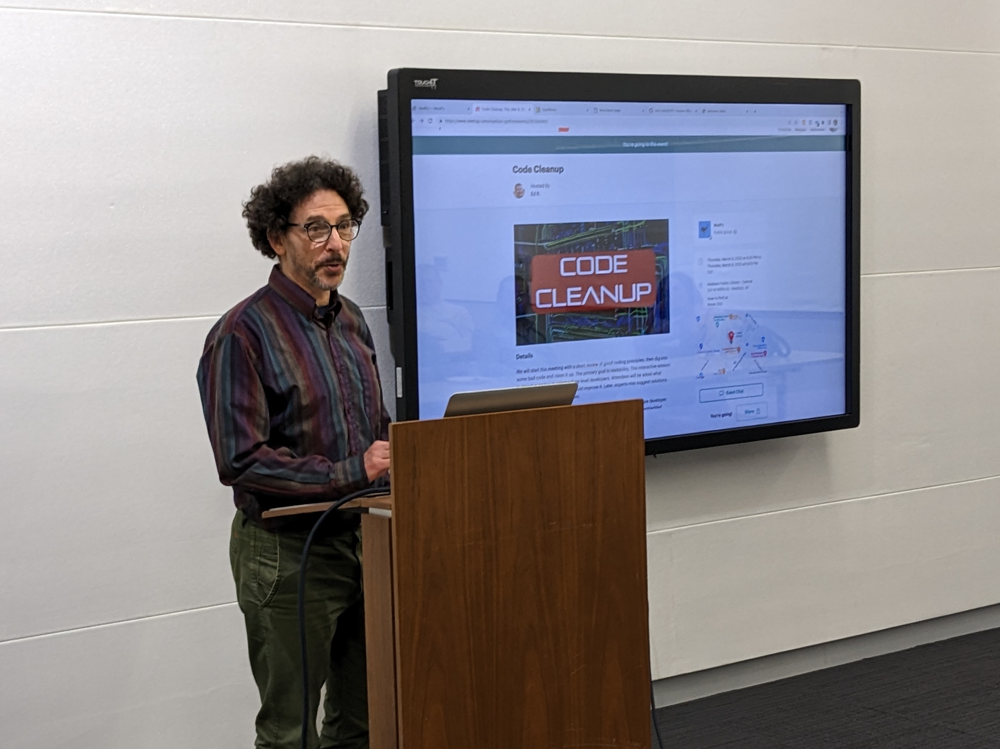

We will start this meeting with a short review of good coding principles, then dig into some bad code and clean it up. The primary goal is readability. This interactive session is aimed at novice to intermediate level developers. Attendees will be asked what needs cleaning, and how you would improve it. Later, experts may suggest solutions. We'll look at a variety of examples.
Our presenter, Davi Post has more than 25 years experience as a software developer. He has worked in scientific, engineering, weather, transportation, and embedded software applications. He has developed knitting machine software, an online game, and a universal compiler (see DaviWorks.com). He loves Python, but wonders what its successor will be.
Do you have some bad code to contribute? We are looking for a few more relatively independent functions or methods, no more than 30 lines each. Send samples to DaviP on Meetup or post to MadPy on Slack.